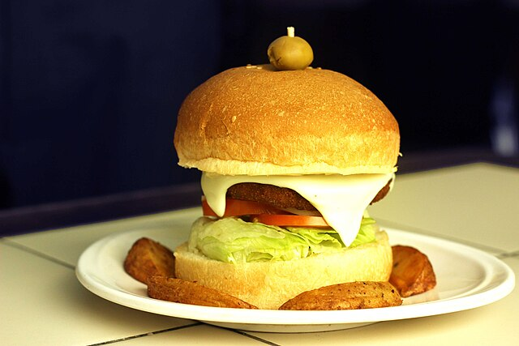

Aloo Tikki
Uttar Pradesh

Aloo Tikki is a beloved street food snack from Uttar Pradesh that has become popular throughout North India. These golden-brown potato patties are made from mashed potatoes mixed with aromatic spices, herbs, and sometimes peas or corn, then shallow-fried until crispy on the outside while remaining soft inside. Aloo tikki can be enjoyed on its own with chutneys or as part of chaat - topped with chickpea curry (chole), yogurt, tamarind chutney, and sev. The versatility and delicious taste of aloo tikki make it a favorite snack at street food stalls and gatherings.